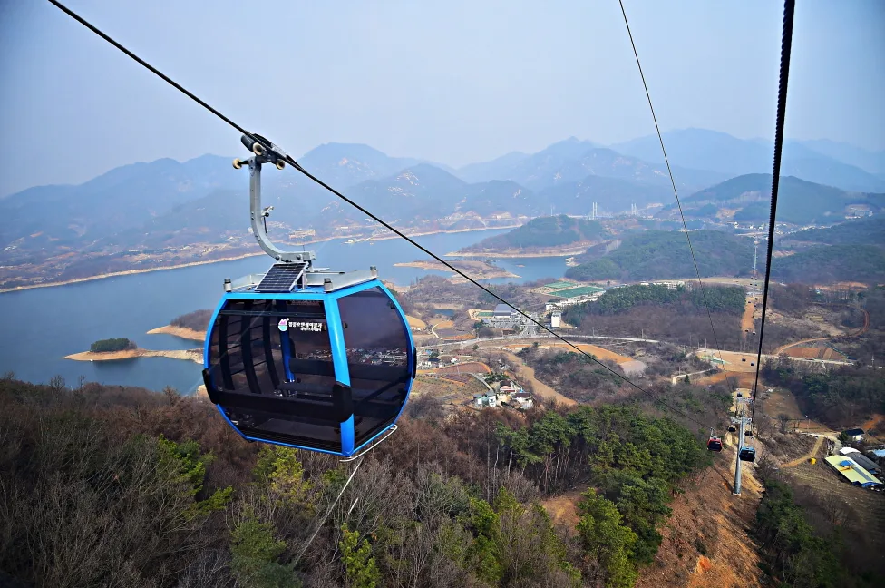
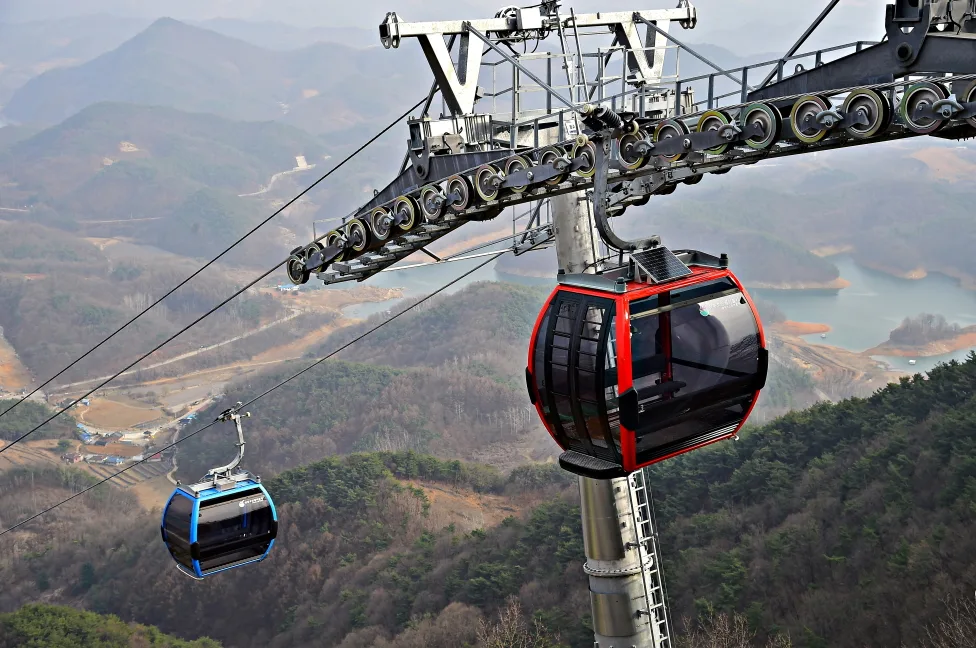
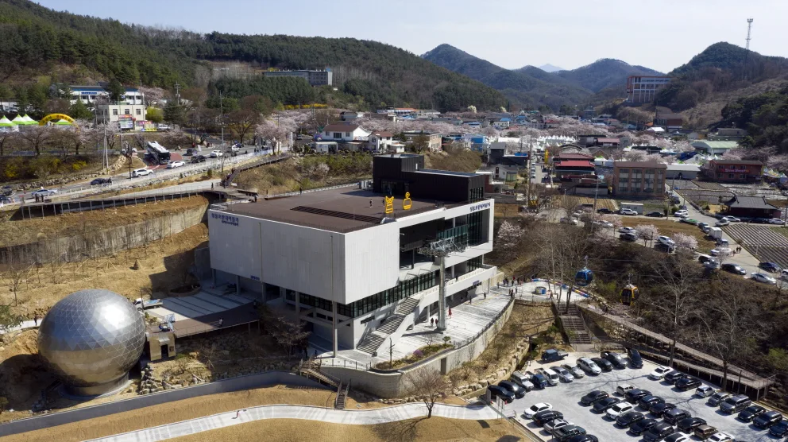
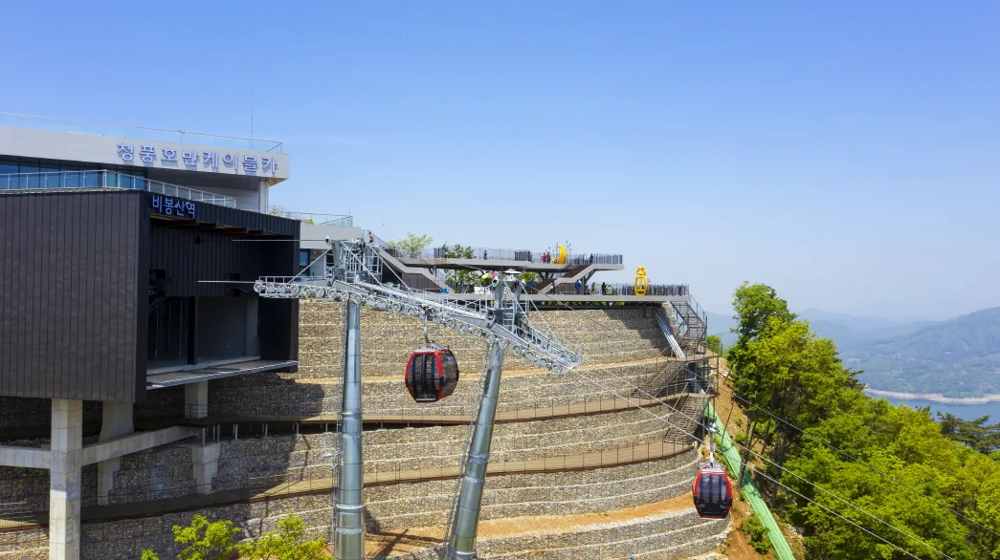
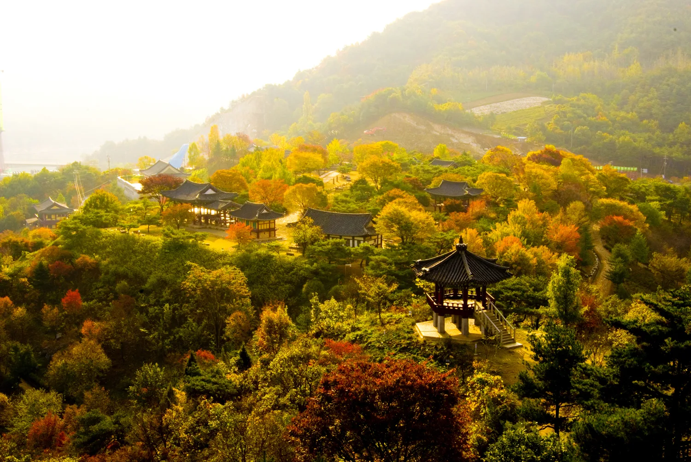
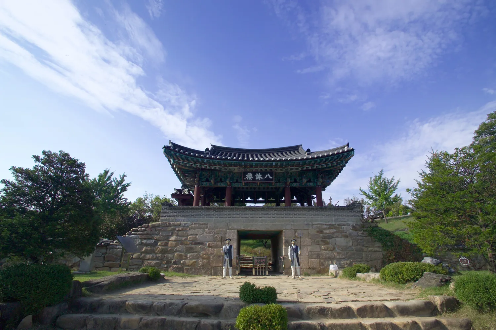
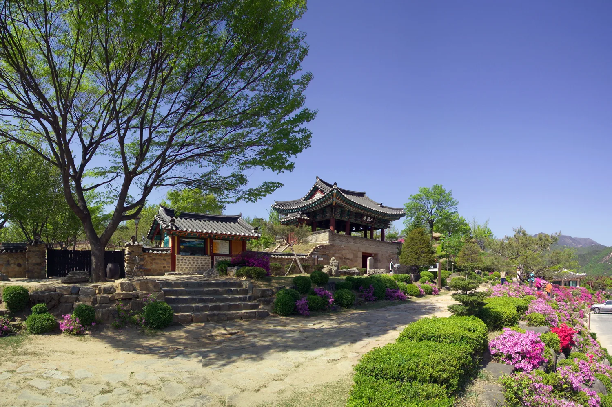
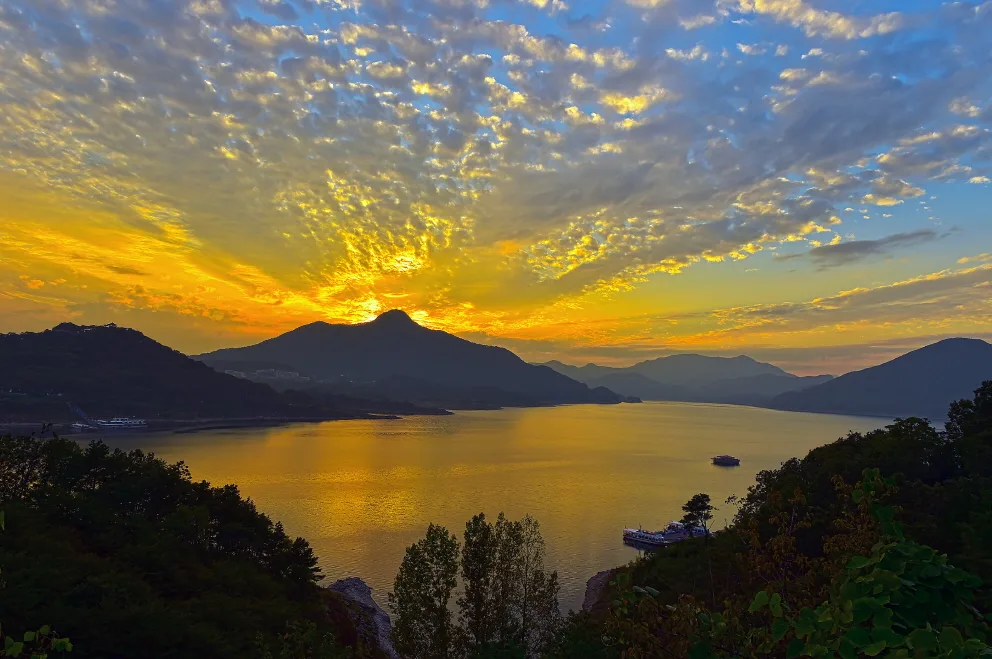

▲ 비봉산 정상 전망대에서 내려다본 청풍호. 물태리에서 이곳까지 2.3km 구간을 8분 만에 잇는다. 산과 호수를 동시에 내려다보는 국내 유일 내륙 케이블카로 꼽힌다 ⓒ 제천시
충북 제천 청풍면 물태리에서 비봉산 정상까지, 2.3km 구간을 8분 만에 잇는 청풍호반케이블카는 산과 호수를 동시에 내려다보는 국내 유일의 내륙형 케이블카로 꼽힌다. 2019년 3월 개장 이후 2025년까지 3년 연속 한국관광 100선에 선정됐다. 운행 구간과 요금, 바닥이 투명한 크리스탈 캐빈, 비봉산 정상 부대시설, 인접한 청풍문화재단지 연계 코스와 주차 정보까지 2026년 기준으로 정리했다.
1. 운행 구간과 캐빈 — 8분 만에 비봉산 정상으로

▲ 캐빈이 청풍호 상공을 지나는 모습. 호수에 잠긴 산줄기가 다도해처럼 보인다 ⓒ 제천시
청풍호는 1985년 충주다목적댐 건설로 조성된 인공호수다. 케이블카는 하부 물태리역에서 상부 비봉산역까지 2.3km 구간을 초당 5m 속도로 운행하며, 편도 약 8~9분이 걸린다. 오스트리아 도펠마이어사가 건설한 최신형 10인승 캐빈은 바닥이 막힌 일반 캐빈 33대와 바닥이 투명한 크리스탈 캐빈 13대, 총 46대로 구성돼 시간당 최대 1,500명, 하루 최대 1만 5,000명을 수송한다.
운행 정보
- 구간: 물태리(하부) ↔ 비봉산 정상(상부), 2.3km
- 소요시간: 편도 약 8~9분(왕복 약 18분), 속도 초당 5m
- 캐빈: 10인승, 일반 캐빈 33대 + 크리스탈(투명바닥) 캐빈 13대, 총 46대
- 비봉산 정상 해발고도: 531m
2. 요금과 운영시간

▲ 삭도를 따라 이동하는 캐빈들. 왕복 요금은 일반 캐빈과 크리스탈 캐빈으로 나뉜다 ⓒ 제천시
| 구분 | 대인 | 소인 |
|---|---|---|
| 일반 캐빈 | 18,000원 | 14,000원 |
| 크리스탈 캐빈(투명바닥) | 23,000원 | 18,000원 |
이용 팁
- 운영시간: 09:30~18:30(매표마감 18:00), 계절·기상에 따라 변동 가능
- 단체(20인 이상) 예매 시 1,000원 할인
- 만 36개월 미만 유아는 무료
- 기상 악화 시 운행이 일시 중단될 수 있어 방문 전 공식 홈페이지 확인이 필요하다
청풍호반케이블카 공식 홈페이지에서 실시간 운영 정보 확인
3. 비봉산 정상과 물태리역 — 전망대·카페·모노레일

▲ 하부 물태리역 전경. 둥근 시네마360 상영관과 환상미술관, 넓은 무료 주차장을 갖추고 있다 ⓒ 제천시
비봉산이라는 이름은 봉황이 알을 품고 있다가 날아오르는 모습을 닮았다는 데서 유래했다. 상부 비봉산역은 1층 모노레일 탑승장과 편의점, 2층 카페, 3층 전망대로 구성되며 옥상정원 포토존과 왕복 약 35분 거리의 약초숲길 산책로도 갖췄다. 하부 물태리역 1층에는 시네마360과 환상미술관, 관광안내소가 있고 2층에는 카페와 족욕 공간이 마련돼 쉬어가기 좋다.

▲ 정상 능선에 자리한 비봉산역. 케이블카와 함께 청풍호관광모노레일도 이 역까지 운행한다 ⓒ 제천시
정상까지 오르는 또 다른 방법으로 청풍호관광모노레일(비봉산관광모노레일)이 있다. 도곡리역에서 비봉산역까지 왕복 3km 구간을 편도 약 23분(왕복 약 50분)에 오르내리며, 도곡리역과 물태리역 사이는 약 1시간 간격의 셔틀버스로 20분 정도 걸려 연결된다. 모노레일 매표소에서는 모노레일로 올라가 케이블카로 내려오는 왕복 연계권을 판매하지만, 반대로 케이블카로 올라가 모노레일로 내려오는 조합은 판매되지 않는다. 모노레일은 동절기(12~2월)와 매주 월요일에는 운행하지 않으므로 겨울철 방문 시 유의해야 한다.
4. 청풍문화재단지 — 수몰 위기 문화재를 옮겨 놓은 곳

▲ 가을철 청풍문화재단지 전경. 충주댐 건설로 물에 잠길 뻔한 문화재를 한곳에 옮겨 조성했다 ⓒ 제천시
청풍문화재단지는 1985년 충주다목적댐 건설로 수몰될 위기에 놓였던 청풍면 일대 문화재를 한곳에 옮겨 보존한 야외 박물관이다. 보물 2점과 충청북도 지방유형문화재 9점을 포함해 한벽루, 금병헌 등 전통 건축물이 호수를 배경으로 늘어서 있다. 케이블카 승강장에서 차로 5분 내외 거리라 함께 묶어 돌아보기 좋다.

▲ 청풍문화재단지 입구의 누각. 계단을 오르면 단지 전체를 조망할 수 있다 ⓒ 제천시
청풍문화재단지 이용 정보
- 입장료: 성인 3,000원 / 청소년·군인 2,000원 / 어린이 1,000원
- 단체(30명 이상): 성인 2,500원 / 청소년·군인 1,500원 / 어린이 800원
- 면제 대상: 초등학생 미만, 만 65세 이상, 장애인, 국가유공자
- 운영시간: 3~10월 09:00~18:00, 11~2월 09:00~17:00 (종료 1시간 전 입장 마감), 연중무휴
- 케이블카 승차권 소지 시 인근 의림지역사박물관 관람료 면제 혜택이 있다
청풍문화재단지 상세 정보는 제천시 관광 사이트에서 확인 가능
5. 주차 정보 — 3개 주차장 모두 무료

▲ 청풍문화재단지 산책로. 케이블카 승강장에서 도보나 차량으로 쉽게 이동할 수 있다 ⓒ 제천시
케이블카 물태리역 주변에는 제1~3주차장이 흩어져 있으며 승용차·버스 모두 무료로 이용할 수 있다. 성수기 주말에는 가까운 주차장부터 순차적으로 만차가 되므로, 여유 있게 도착하거나 제2·3주차장까지 염두에 두는 편이 좋다.
| 구분 | 위치 | 요금 |
|---|---|---|
| 제1주차장 | 제천시 청풍면 문화재길 166 | 무료 |
| 제2주차장 | 제천시 청풍면 물태리 109-28 | 무료 |
| 제3주차장 | 제천시 청풍면 물태리 103 | 무료 |
6. 하루 드라이브 코스 제안

▲ 청풍호 노을. 저녁 무렵 청풍호자드락길이나 유람선 선착장에서 감상하기 좋다 ⓒ 제천시
케이블카와 문화재단지 외에도 청풍호 유람선, 청풍랜드, 청풍조각공원, 정방사, 청풍호자드락길 등이 반경 10분 내외에 몰려 있어 하루 코스로 묶기 좋다.
| 시간대 | 장소 | 메모 |
|---|---|---|
| 오전 | 청풍호반케이블카(비봉산 정상 왕복) | 오전에는 대기가 맑아 조망이 좋고 인파가 상대적으로 적다 |
| 낮 | 청풍문화재단지 | 케이블카 승차권 소지 시 의림지역사박물관 관람료 면제 |
| 오후 | 청풍호 유람선 또는 청풍호자드락길 | 호수를 배 위에서 보거나 산책로를 걸으며 시간대 다르게 즐길 수 있다 |
| 저녁 | 정방사 또는 박달재 | 금수산 자락 정방사는 일몰 무렵 풍경이 좋아 마지막 코스로 추천 |
7. 정리
체크포인트
- 물태리~비봉산 정상 2.3km, 편도 8~9분. 일반 캐빈 왕복 대인 18,000원, 크리스탈 캐빈 대인 23,000원.
- 운영시간은 09:30~18:30(매표마감 18:00)이며 기상 상황에 따라 변동될 수 있다.
- 청풍문화재단지 입장료는 성인 3,000원, 케이블카 승차권 소지 시 의림지역사박물관 관람료가 면제된다.
- 물태리역 제1~3주차장은 모두 무료다.
- 청풍호관광모노레일은 모노레일로 올라가 케이블카로 내려오는 연계권만 판매하며, 동절기(12~2월)와 매주 월요일은 운행하지 않는다.